Water / Waste Water Valves
Our team of valve experts provide impeccable after-sales support
Wafer Butterfly Valve
- The Wafer butterfly valve operates via a disc-shaped butterfly plate installed along the pipeline's diameter direction. The plate rotates within the cylindrical channel of the valve body around its axis, with a rotation range from 0° to 90°. At 90°, the valve is fully open.
- This valve features a simple structure, compact size, and light weight. It requires only a 90° rotation for quick opening and closing, thus providing excellent fluid control characteristics.
Corrosion Protection
Electrical Isolation
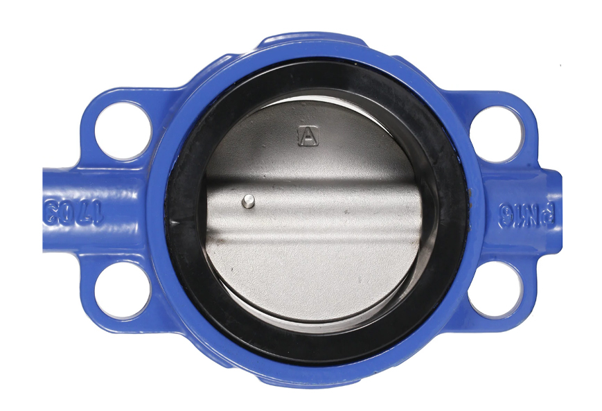
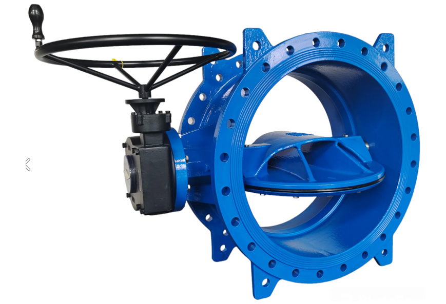
Resilient Seated Double Eccentric Flanged Butterfly Valve
- Double Eccentric Butterfly Valve is further improved on the basis of Single Eccentric Butterfly Valve.
- Its unique structural feature is that the axis of the valve stem not only deviates from the center of the butterfly plate, but also deviates from the center of the valve body.
Corrosion Protection
Electrical Isolation
Non-Rising Stem Resilient Seated Gate Valve
- This Non-Rising Stem Resilient Seated Gate Valve is a reliable and durable solution for controlling and directing the flow of fluid.
- .This gate valve features a non-rising stem and resilient seat design for efficient and durable operation.
Corrosion Protection
Electrical Isolation
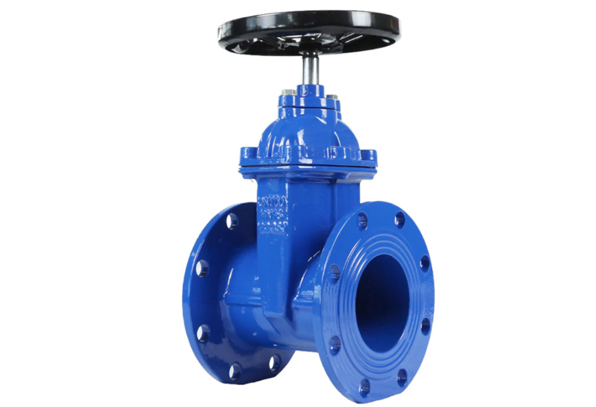
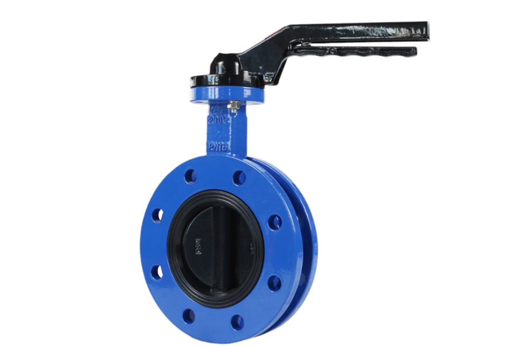
U-Type Butterfly Valve
- The U-Type Butterfly Valve is a high-performance valve used in fluid control systems. Its unique u-shaped disc design provides precise and efficient control over the flow of fluids, reducing energy consumption and ensuring optimal performance.
- Made with durable materials, this valve is reliable and long-lasting, making it the perfect choice for industrial applications.
Corrosion Protection
Electrical Isolation
Dual Plate Wafer Check Valve
- The Dual Plate Wafer Check Valve is a reliable and efficient solution for preventing backflow in pipelines.
- With its unique design, this valve offers a tight seal, allowing for smooth and uninterrupted flow. Made with high-quality materials, it guarantees durability and long-term performance.
Corrosion Protection
Electrical Isolation
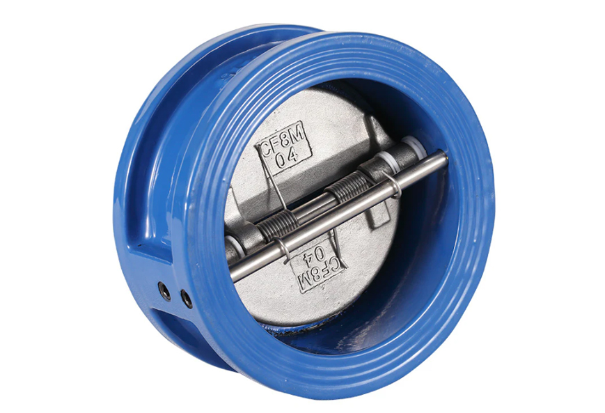
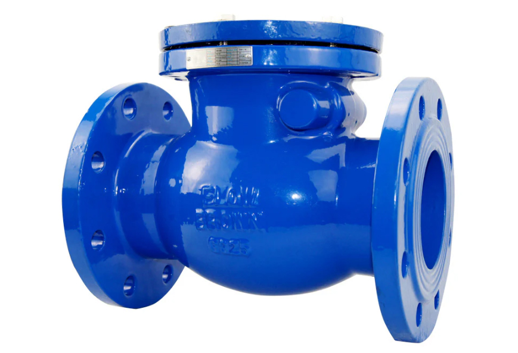
Swing Check Valve
- The Swing Check Valve is a reliable and efficient solution for controlling the flow of liquids in pipes. With its swing motion design, this valve prevents backflow and ensures smooth operation.
- Its durable construction and high-quality materials guarantee long-lasting performance. Increase the efficiency of your piping system with the Swing Check Valve.
Corrosion Protection
Electrical Isolation
Flange Double plate check valve
- This Flange Double Plate Check Valve is a reliable choice for preventing backflow in plumbing systems. With its durable flange design and double plate mechanism, it ensures long-lasting performance and efficient operation.
- Our products hold up to 10 international authoritative certification certificates, ensuring compliance with global standards.
Corrosion Protection
Electrical Isolation
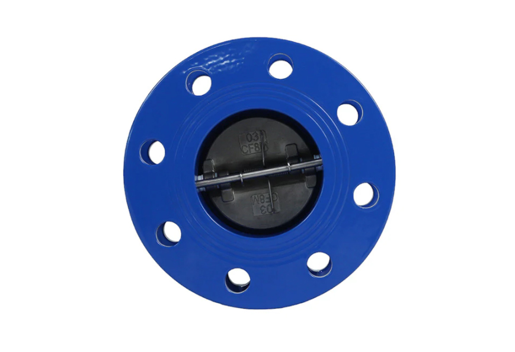
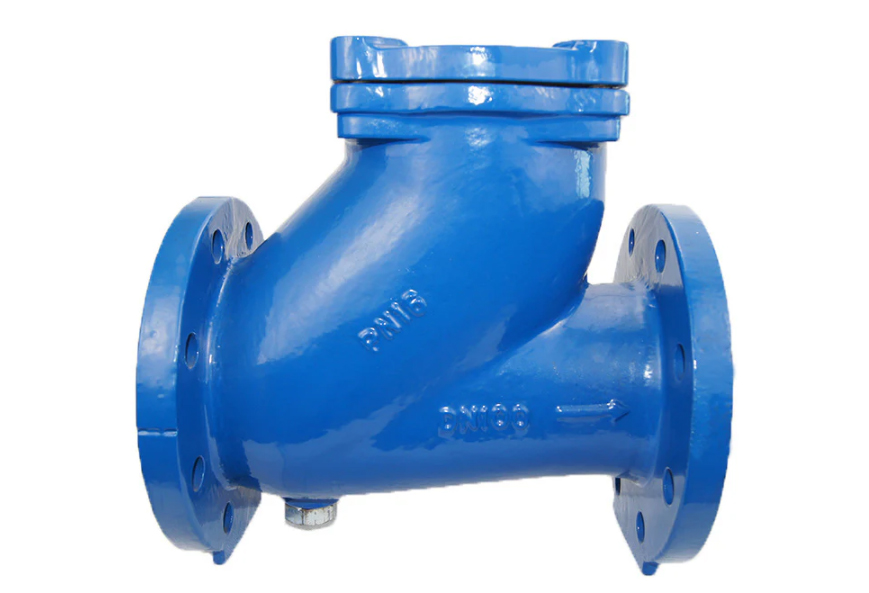
Ball Type Check Valve
- Ball check valve is a kind of check valve with multi-ball, multi-runner and multi-cone inverted fluid structure, which is mainly composed of front and rear valve body, rubber ball, cone body and so on.
- Its working principle is: the rubber ball in the ball cover for a short trip rolling to realize the opening and closing of the valve. When the pump starts, the water under the action of pressure to open the rubber ball
Corrosion Protection
Electrical Isolation
Wafer Butterfly Valve with Valve Plate Spray Painting
- This cast iron wafer butterfly valve with valve plate spray painting is a durable and versatile valve that is perfect for a variety of industrial applications.
- Made from high-quality cast iron, this valve is corrosion-resistant and has a long lifespan. The valve plate spray painting further enhances its durability while providing a smooth and efficient flow control.
Corrosion Protection
Electrical Isolation
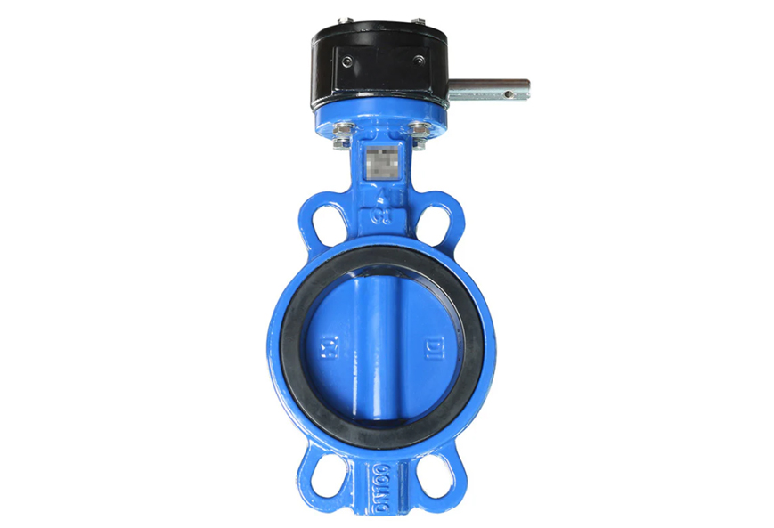
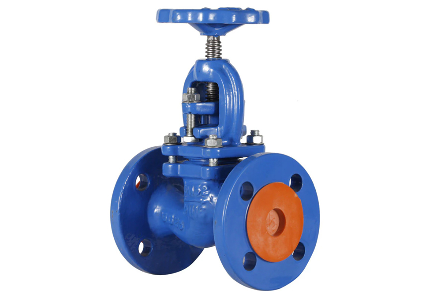
DIN Cast Iron Globe Valve
- Globe valve through the valve stem to drive the valve flap along the axis of the sealing surface of the valve seat to do lifting movement, to achieve the purpose of opening and closing
- Can be used for a variety of pressures and a variety of temperatures to transport a variety of liquids and gases, but also can be used to do cut off
Corrosion Protection
Electrical Isolation
Double ball rubber expansion joint
- Rubber expansion joint is a common pipe connector, also known as rubber soft connection, which is mainly composed of rubber and steel wire. The main role is to connect the pipeline, play the role of connection, shock absorption, noise reduction and so on.
- It can withstand a certain pressure and displacement in the pipeline connection, so as to ensure the normal operation of the pipeline.
Corrosion Protection
Electrical Isolation
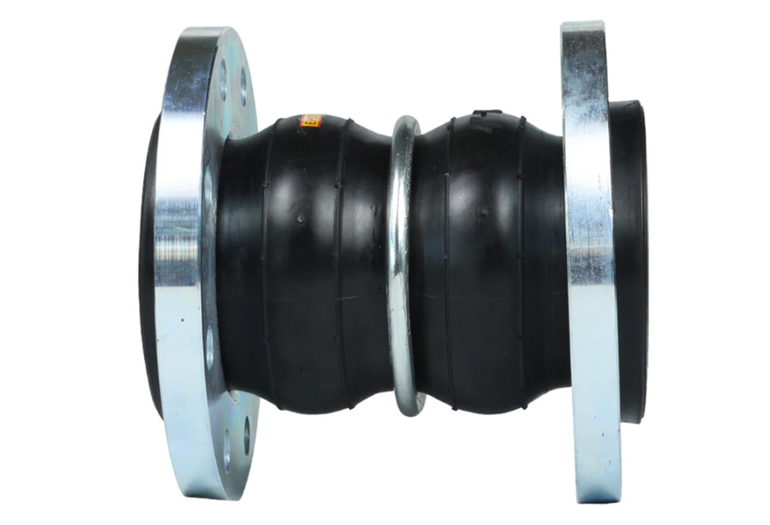

Wafer butterfly valve
- The Wafer butterfly valve operates via a disc-shaped butterfly plate installed along the pipeline's diameter direction. The plate rotates within the cylindrical channel of the valve body around its axis, with a rotation range from 0° to 90°. At 90°, the valve is fully open.
- Can be used for a variety of pressures and a variety of temperatures to transport a variety of liquids and gases, but also can be used to do cut off
Corrosion Protection
Electrical Isolation